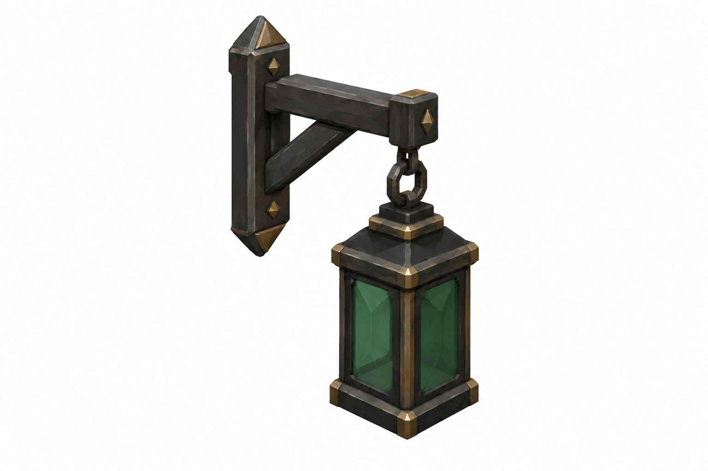
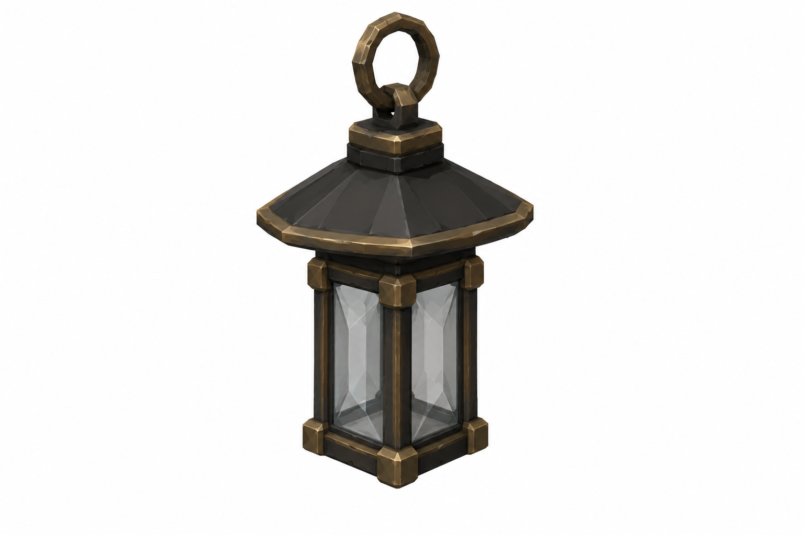
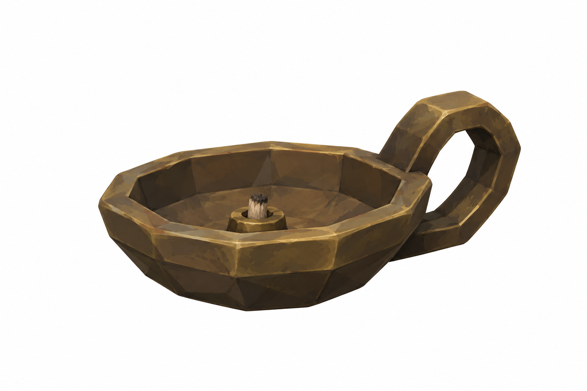
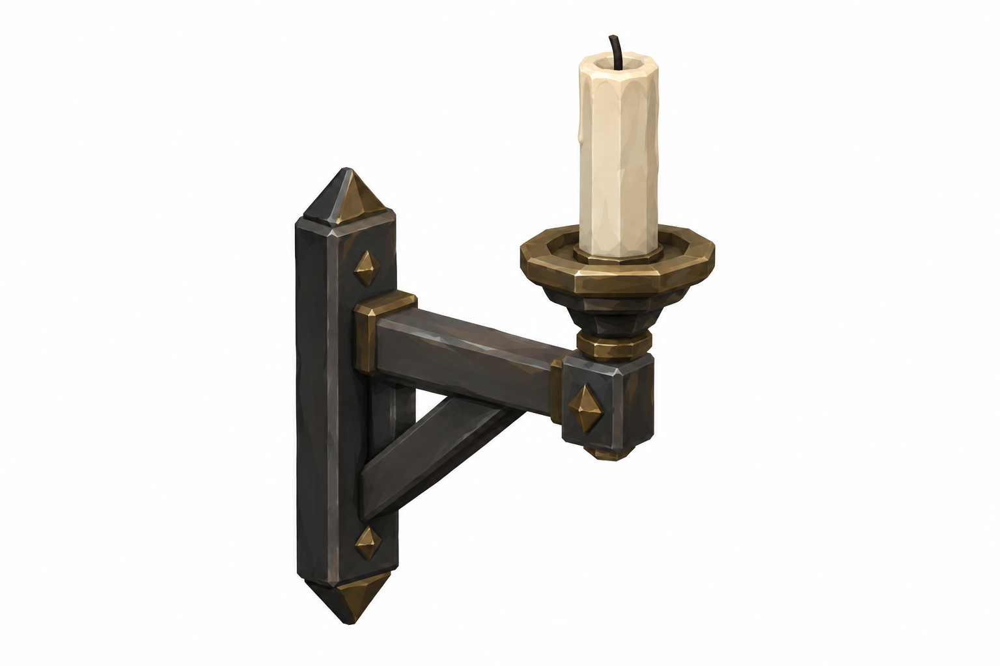
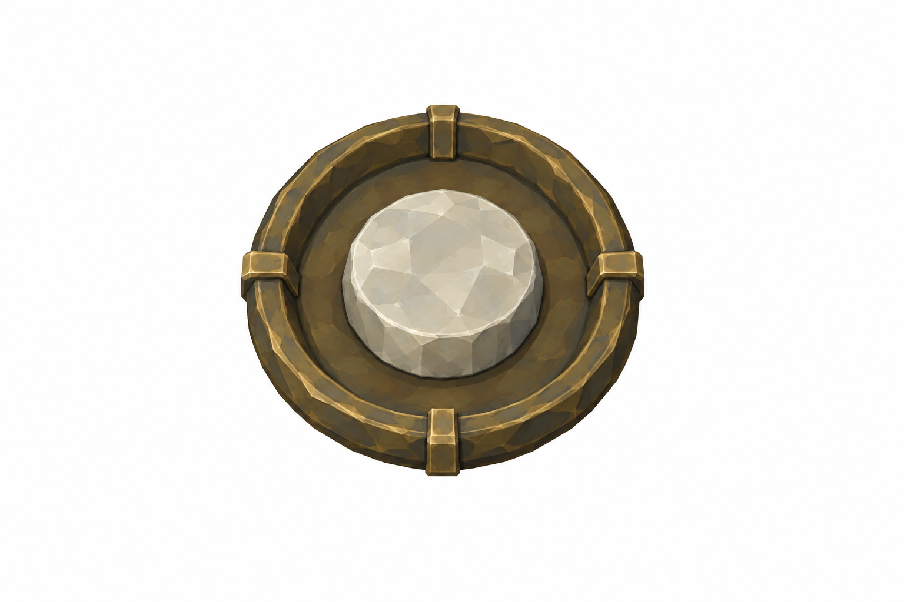
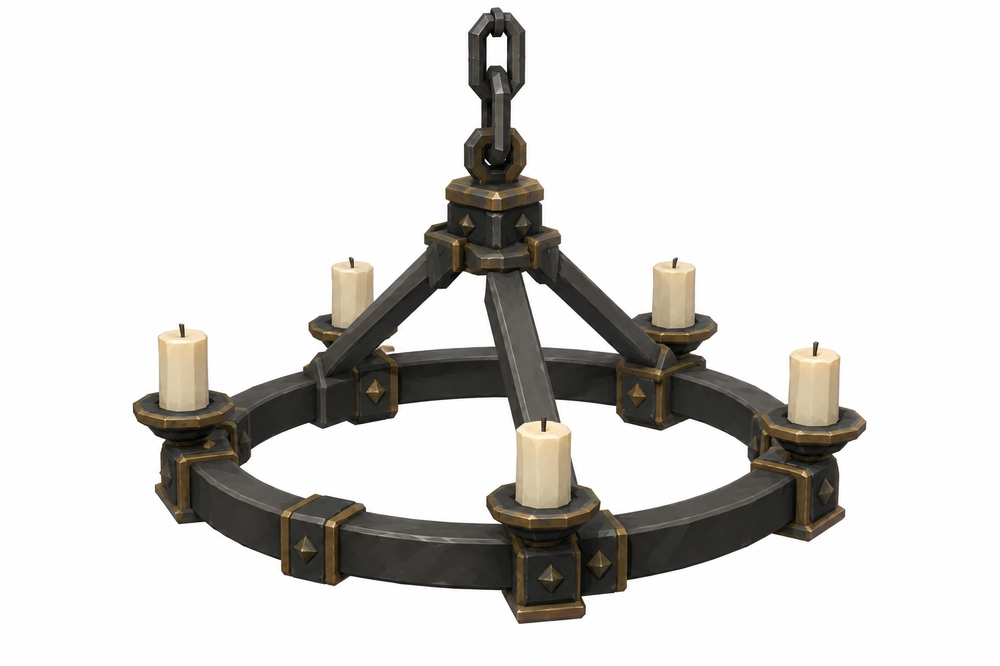

Görseller tasarım referansıdır. Ölçüler hedef sayılarıdır; raster oranları yaklaşık, gerçek mesh/Unity fit doğrulanmadı. Tripo'ya geçilmedi. Git/Jira gönderimi bu taslak için yapılmadı.
Armatür ailesi / açık durum renk rolleri
Tek wallbody; glazingmaterialvariant, ayrı body yok.
Violet
Clearhorn / coldwhite
Wardgreen
Warm
White-gold
Şematik renk rolleri; izolerefs unlit. White-gold yalnız151touch/146sockets/148exits; trap handles kullanılmaz. CandlecrownØ1.2. Chain statik tekrar segmenti Blender'da; bodyvariantlar yeniimagegen gerektirmez.
Tekil45° referanslar

WallLantern · 0.22 ×0.22 ×0.4m; arm0.35Style/semantic review completed; exact proportions and mesh fit remain unverified.
HangingLantern · Ø0.3 ×H0.45; hoodØ0.45Style/semantic review completed; exact proportions and mesh fit remain unverified.
OilLamp · Ø0.12 ×H0.07Style/semantic review completed; exact proportions and mesh fit remain unverified.
Pricket · 0.25 ×H0.35Style/semantic review completed; exact proportions and mesh fit remain unverified.
InteractionRim · Ø0.15–0.18 ×D0.03; emberØ0.1Style/semantic review completed; exact proportions and mesh fit remain unverified.
CandleCrown · Ø1.2mStyle/semantic review completed; exact proportions and mesh fit remain unverified.